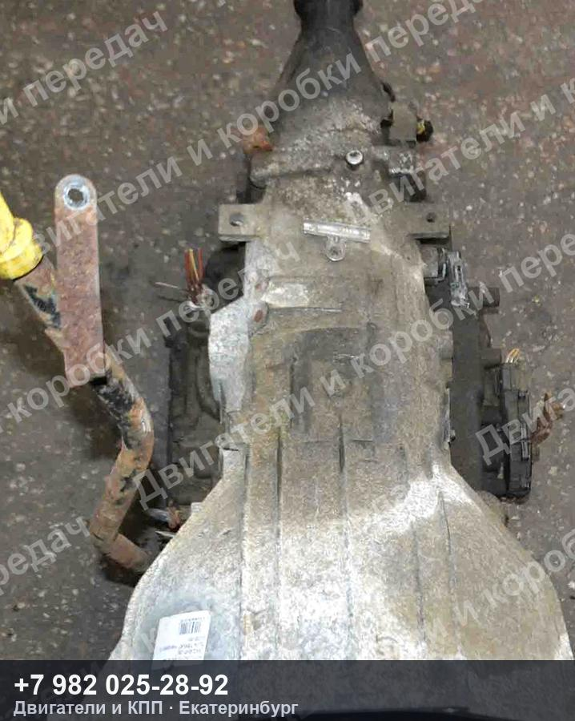
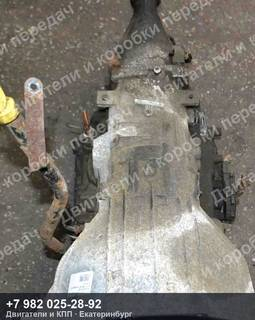
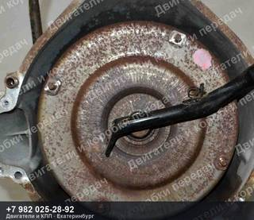
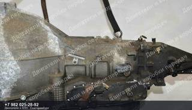
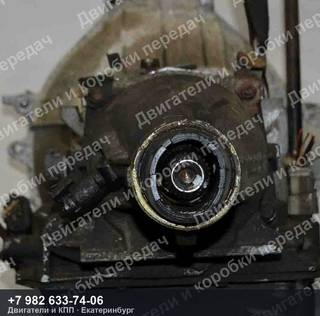
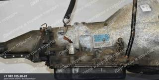
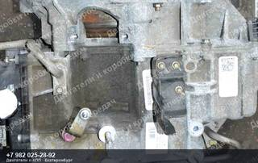
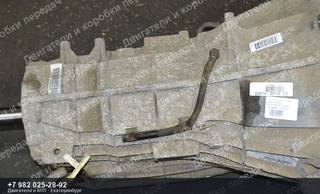
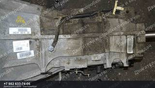
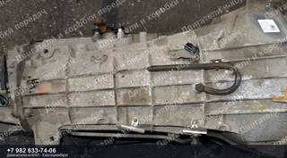

Контрактная АКПП Lincoln NAVIGATOR II U228
Контрактная АКПП Lincoln NAVIGATOR II U228 — двигатель TRITON 5.4L, код 2WD.
| Марка | LINCOLN |
| Модель | NAVIGATOR II |
| Кузов | U228 |
| Двигатель | TRITON 5.4L |
| Тип | Автомат |
| Номер детали | 2WD |
| OEM-номера | 5L747000AE, 5L747000AF, 1068012394 |
| Состояние | Б/у |
| Артикул | ДК-587173 |
Контрактная АКПП Lincoln NAVIGATOR II U228 — что важно знать
Агрегат снят с автомобиля LINCOLN NAVIGATOR II U228. Двигатель TRITON 5.4L. Номер детали 2WD. Подходящие OEM-номера: 5L747000AE, 5L747000AF, 1068012394.
Перед отправкой агрегат проверяем и фотографируем. Пришлём фотографии и видео работы именно этого экземпляра, поможем проверить совместимость по VIN вашего автомобиля. Отправка из Екатеринбурге до транспортной компании — бесплатно, дальше — любой ТК до вашего города.
Не нашли свой контрактная АКПП Lincoln NAVIGATOR II?
Пришлите VIN или марку с моделью — проверим по складу и подберём то, что точно встанет на вашу машину. Ответим и подскажем, даже если у нас этого нет.
Похожие агрегаты Lincoln



